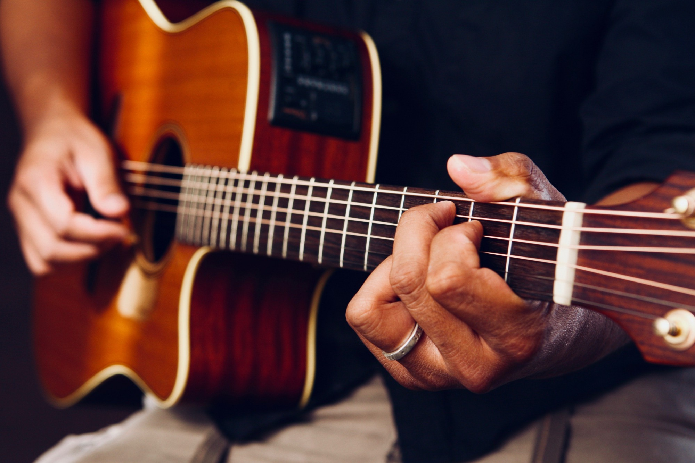

Мое хобби игра на гитаре по нескольким причинам. Например,
у гитаристов очень развита эмпатия и интуиция. Интересно,
что гитаристы чаще других музыкантов учатся играть не по нотам,
а смотрят за игрой других людей – известных музыкантов, преподавателей.
И конечно, все музыканты наделены чувством любви к прекрасному,
музыкальным вкусом и слухом, чувством ритма.
Игра на инструменте улучшает концентрацию и память, так же как шахматы
или игра в судоку. Вы становитесь многозадачными – ведь одновременно
нужно читать табулатуру, брать аккорд, держать ритм. При регулярных
занятиях играть становится легче, вырабатывается мышечная память.
Особенно полезна игра в стиле «фингерстайл», она здорово развивает моторику.
Я уверен в том, что у гитаристов развиваются и математические способности.
Ведь теория музыки основана на математических понятиях, развивается логическое мышление.